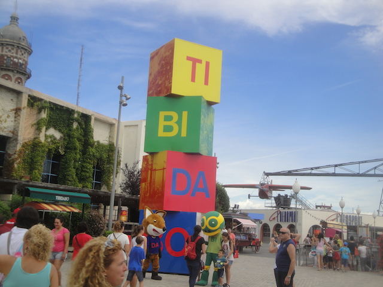
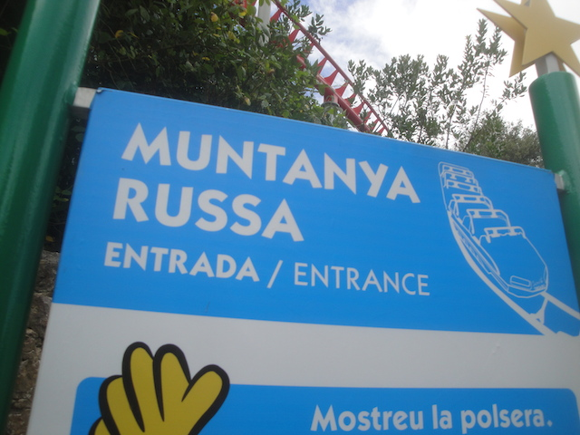
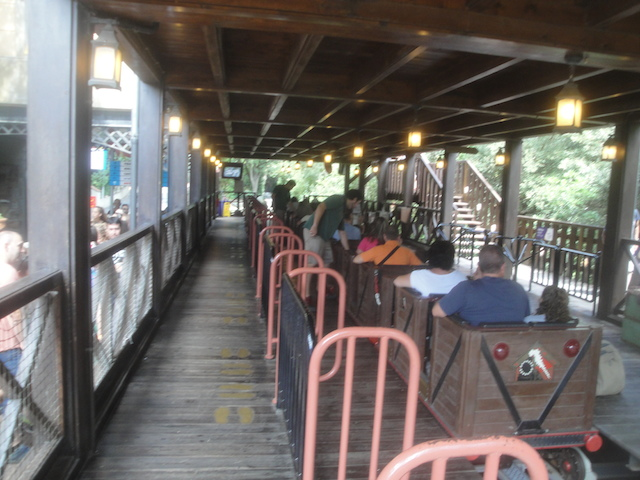
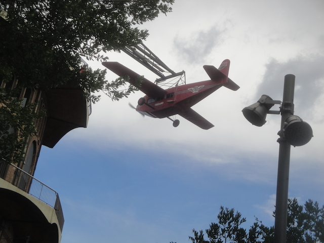
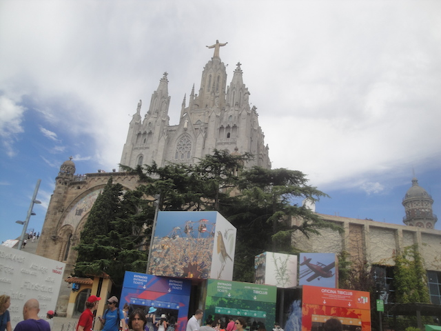

| |
Tibidabo Review

Tibidabo is...an intersting park, to say the least. It's one of those places where...there's really very few amusement parks like it. Honestly, the closest thing that comes to Tibidabo would be the Glenwood Caverns Adventure Park. This is often why I often refer to it as the Glenwood Caverns Adventure Park of Europe. The entire park is on top of a mountain, but not just any mountain. Nope, it's on top of Tibidabo, which is the name of the mountain. The park is officially called the Tibidabo Amusement Park, but I just refer to it as Tibidabo, as well as everything up on the mountain. You have to take the Tibidabo Funicular to reach the freaking park. I can only think of one other park where you have to take a funicular to reach the top, and it's in Japan. So this is the only park I've been to that requires a funicular to the top. But it's not just getting to the park that makes it so unique, which is an adventure in and of itself. The park itself is...a bit of an oddball. There aren't very many rides. The most famous rides are custom made and mainly for looking over the mountain and down on Barcelona, the other rides are fun, but nothing special, and there are no real thrilling or intense coasters. This isn't a typical amusement park where you'd go, ride a bunch of intense rides, and stuff like that. Tibidabo is more of a small amusement park that you just relax at, enjoy a couple rides, and hang out at while up on the rest of Tibidabo.
Rollercoasters
There is a link to a review of all the Rollercoasters at Tibidabo.
Top Coasters
Muntanya Russa Review

Powered Coasters
Virtual Express Review

Flat Rides
Here are the reviews of all the Flat Rides at Tibidabo. All right. Let's first go over the really intersting flat rides. The ones that make Tibidabo famous. Yep, it's time to talk about Plane on a Stick. Now I know Plane on a Stick is also a nickname for Vertigo @ Tivoli Gardens. But nope, here, Plane on a Stick, is essentially that. It's literally a plane that you get in, and it goes around in a circle on a stick. I know the ride is officially called Barri de l'Avio (The Plane), but it's just more fun to call it Plane on a Stick. So yeah. Plane on a Stick is an intersting experience. The whole thing is themed to one of those really old planes. The ones that existed before airlines really took off and planes became sky busses that you only fly on because, let's face it. They may be misreable and you will be groped by TSA when going through airport security for the sake of security theater. But you gotta get to Europe, and you don't have time to take a f*cking ship! So on the plane you go. The inside has...an intersting, almost old school vibe. And it goes in a circle. The reason people freak out about this ride is that the plane flies over the edge of Tibidabo mountain. So yeah. This little plane is right above Barcelona, and people are freaking out simply due to the heights. Yeah. This is freaky for the same reason as the rides on the top of the Stratosphere Tower. Except I'm not afraid of either, as heights don't freak me out. But Plane on a Stick is still a fun little ride. Now while I didn't ride it due to time, it's also worth talking about. So let's discuss Barri de la Talaia. AKA, The Panoramic. This at first glance, looks like a skyscraper. But nope. It's just a bucket that goes up into the sky much in a way like a skyscraper. I know people have been scared of it due to heights. And yeah, it too has the Stratosphere effect. I wouldn't have been afraid of it, but it does seem like a fun ride definetly worth checking out. They also have a top spin, a magic carpet, a pirate ship, chairswings, and a ferris wheel that's apparently faster than normal.

Enjoying the view? >=)
Dark Rides
Apparently, Tibidabo has a dark ride. It's a suspended monorail that has all these same great views of the mountain and of Barcelona down below. But there's also a moment where you get eaten by this dragon and then it's got this dark ride section inside. I not only didn't ride it due to time, but I didn't even freaking see it! I know I'm assuming that it's hidden away somewhere, but when I went to the park, I never saw any of the track. Nothing. And from looking at photos of the ride, the track is high above the mountain and it sticks out. Apparently, it even goes above the funicular at one point. But I saw nothing! NOTHING!!! Oh well. I'm sure it was right under my nose and probably would've saw it if I just looked in the other direction. Oh well. Looks like a fun little dark ride.
Water Rides
There actually is a log flume at Tibidabo. I did not know this when I visited the park, probably because I'm assuming it's in the lower section of the park where more of the generic rides are. But yeah. Tibidabo has a log flume. From looking at the photos of it, it doesn't look like anything special. But hey. I'm not going to diss a park for having a log flume. Even a crappy RCT style log flume is better than nothing.
Dining
I didn't eat at Tibidabo. I highly doubt the actual park has anything really special when it comes to food. However, there's more than just the amusement park up at the top. And sure enough, there are some resteraunts. Though honestly, from reading the reviews on TripAdvisor, the folks aren't saying kind things about the resteraunts up on Tibidabo. They mostly seem to be Spanish cuisine (considering we're in Spain, nothing riveting), and the average rating is 3 stars (though there's plenty of bad reviews much lower). The one restraunt that's rated highly is located in the Gran Hotel La Florida, which is apparently a really fancy five star hotel. So it figures that they'd have good food. But even if the resteraunts on Tibidabo aren't that great, you are in Barcelona. Just take the funicular down to the city. You'll find some resteraunt that works in Barcelona.
Theming and Other Attractions
Here are the reviews of all the other stuff at Tibidabo. As for theming, there's pretty much none. But just take a look at where this park is. This park is literally on top of a mountain overlooking freaking Barcelona! You really don't need much theming. Sure, there's a tiny little bit of theming for the plane. There's a little bit at the entrance. But no. There's no theme to this place other than Tibidabo Mountain. The park is literally named after the mountain. And yeah. The setting for the park is unbelievably beautiful. I'm a big fan of mountain views, and looking down on Barcelona just makes it even better. So yeah. You're for sure going to see Tibidabo on our Top 10 Theme Park Settings List. All right. Moving onto other attractions they have in the park. Well, honestly not a whole lot of other stuff is in the actual park. Apparently they have a haunt walkthrough in the park, since those are way more common in Europe than in America and are practically mandatory here. There's also a museum about technology here. Eh, it's not something I'm personally interested in, but it is cool that they have that here. It's always good to have more stuff like that. And who knows. Maybe there is some cool stuff in there that'd take me by surprise. Also keep in mind that there's other stuff aside from the theme park on Tibidabo Mountain that they have. Yeah, there's the Torre de Collserola, which is a TV Tower, but it also functions as an observation tower you can go up to the top of. So if that mountain veiw you get at Tibidabo isn't high enough for you, you can always head up to the top of this TV Tower. But by far, the bigger draw on Tibidabo is the Sagrat Cor church. Yeah, this thing is a big famous Catholic church, and it's officially a landmark of Barcelona. In fact, the majority of people who take the funicular up to Tibidabo aren't doing it for the amusement park, but rather the church. But when you consider the fact that I'm a Richard Dawkins style atheist, it's clear that I have no interst in the church at all. But, hey. At least it's pretty.

Urge to make snarky "Religion is bullsh*t!" comment rising.
In Conclusion
Tibidabo is definetly one of the most unique and intersting parks that I have ever visited. I know I keep saying that there are almost no amusement parks similar to it. Because...well, yeah. The only thing that comes close is the Glenwood Cavern Adventure Park, which I've mentioned a lot in this review. It's not even like most small parks. It's mainly a small collection of standard rides, a fun little roller coaster, and a couple of really intersting custom made rides that all just seem to be plopped on top of Tibidabo Mountain, along with a TV Tower, a famous church, and a fancy hotel that's up there. It's not a park where you go, spend the whole day there, ride a bunch of rides, and then leave like with most theme parks. Nope. Tibidabo is a park where you just go, ride a couple rides, enjoy the view, check out the other stuff on the mountain, and then take the funicular back down and enjoy the rest of your time in Barcelona. So yeah. Hardcore coaster enthusiasts aren't going to be super intersted in this place and would rather go to Port Aventura instead (I really want to get out to that park sometime). But if a day up on top of a mountain, relaxing, enjoying the view, having fun on a nice little coaster, and enjoying a couple custom rides that freak people out who are afraid of heights, then Tibidabo is definetly worth a stop. Plus, it's just a really cool place to visit in Barcelona, which itself, is a really great city. It's definetly worth your time.
Enthusiast FAQs.
*Are there kiddy coaster restrictions? - Tibidabo doesn't have a kiddy coaster.

Tips
*Make sure you have the time to do both Plane on a Stick and that Panoramic (I really wish I did that).
*Don't treat Tibidabo as a credit whoring stop.
*Enjoy the view.
*The POV Policy is basically "Go Pros are allowed. But not regular cameras".
*Have Fun!!!!
Theme Park Category:
Small Park
Location
Barcelona, Catalonia, Spain
Last Day Visited
August 14, 2015
Video
I don't have enough footage to shoot a Tibidabo Video. If I gain enough, it'd just be a tiny little video.
Complete Update List
2015
Disney Magic Cruise 2015
Here's a link to the parks website.
Home
|